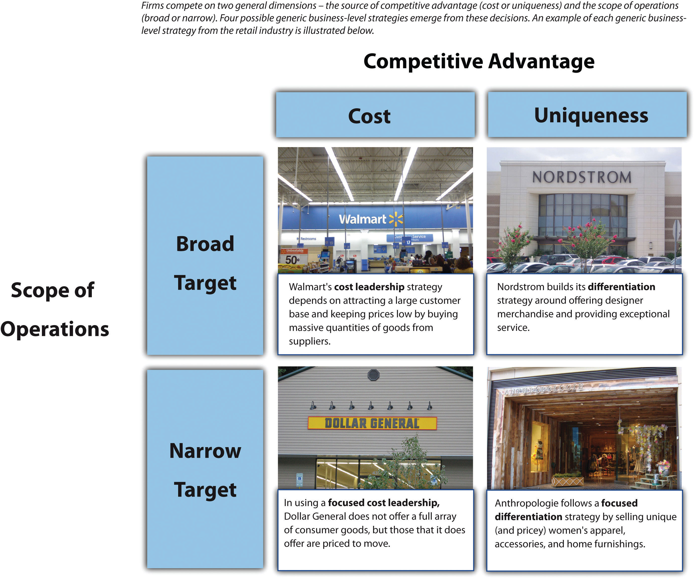
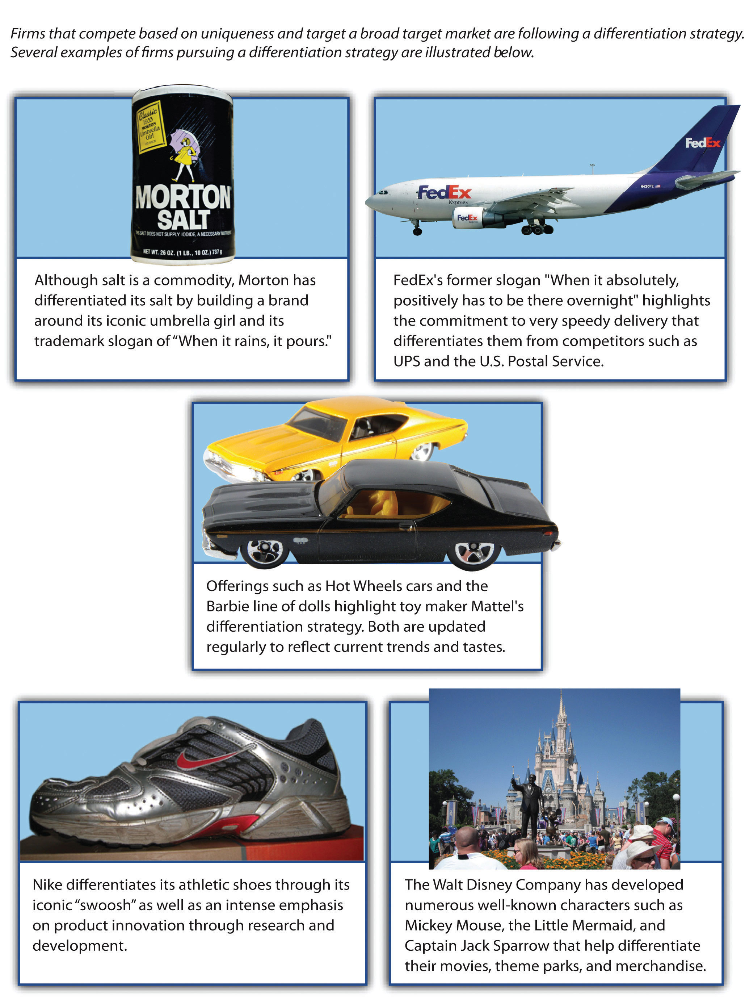
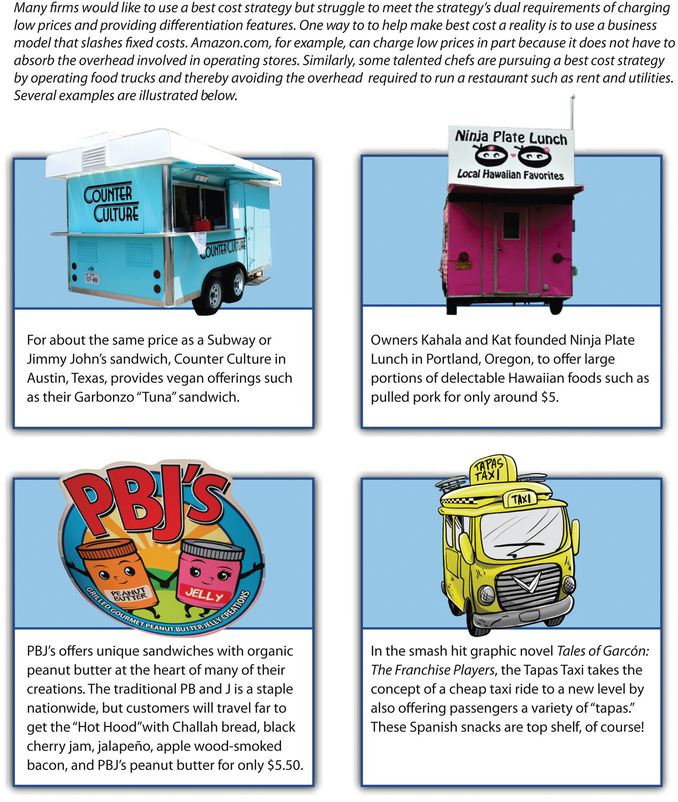

After reading this chapter, you should be able to understand and articulate answers to the following questions:
On January 13, 2011, Target Corporation announced its intentions to operate stores outside the United States for the first time. The plan called for Target to enter Canada by purchasing existing leases from a Canadian retailer and then opening 100 to 150 stores in 2013 and 2014.Target Corporation to acquire interest in Canadian real estate from Zellers Inc., a subsidiary of Hudson’s Bay Company, for C$1.825 billion [Press release]. 2011, January 13. Target Stores. Retrieved from http://pressroom.target.com/pr/news/target-corporation-to-acquire-real-estate.aspx The chain already included more than 1,700 stores in forty-nine states. Given the close physical and cultural ties between the United States and Canada, entering the Canadian market seemed to be a logical move for Target.
In addition to making its initial move beyond the United States, Target had several other sources of pride in early 2011. The company claimed that 96 percent of American consumers recognized its signature logo, surpassing the percentages enjoyed by famous brands such as Apple and Nike. In March, Fortune magazine ranked Target twenty-second on its list of the “World’s Most Admired Companies.” In May, Target reported that its sales and earnings for the first quarter of 2011 (sales: $15.6 billion; earnings: $689 million) were stronger than they had been in the first quarter of 2010 (sales: $15.2 billion; earnings: $671 million). Yet there were serious causes for concern, too. News stories in the second half of 2010 about Target’s donations to political candidates had created controversy and unwanted publicity. And despite increasing sales and profits, Target’s stock price fell about 20 percent during the first quarter of 2011.
Concern also surrounded Target’s possible vulnerability to competition within the retail industry. Since its creation in the early 1960s, Target executives had carved out a lucrative position for the firm. Target offers relatively low prices on brand-name consumer staples such as cleaning supplies and paper products, but it also offers chic clothing and household goods. This unique combination helps Target to appeal to fairly affluent customers. Although Target counts many college students and senior citizens among its devotees, the typical Target shopper is forty-one years old and has a household income of about $63,000 per year. Approximately 45 percent of Target customers have children at home, and about 48 percent have a college degree.Target fact card. 2007, January 2007. Retrieved from http://sites.target.com/images/corporate/about/pdfs/corp_factcard_101107.pdf Perhaps the most tangible reflection of Target’s upscale position among large retailers is the tendency of some customers to jokingly pronounce its name as if it were a French boutique: “Tar-zhay.”
Target’s lucrative position was far from guaranteed, however. Indeed, a variety of competitors seemed to be taking aim at Target. Retail chains such as Kohl’s and Old Navy offered fashionable clothing at prices similar to Target’s. Discounters like T.J. Maxx, Marshalls, and Ross offered designer clothing and chic household goods for prices that often were lower than Target’s. Closeout stores such as Big Lots offered a limited selection of electronics, apparel, and household goods but at deeply discounted prices. All these stores threatened to steal business from Target.
Walmart was perhaps Target’s most worrisome competitor. After some struggles in the 2000s, the mammoth retailer’s performance was strong enough that it ranked well above Target on Fortune’s list of the “World’s Most Admired Companies” (eleventh vs. twenty-second). Walmart also was much bigger than Target. The resulting economies of scale meant that Walmart could undercut Target’s prices anytime it desired. Just such a scenario had unfolded before. A few years ago, Walmart’s victory in a price war over Kmart led the latter into bankruptcy.
One important difference between Kmart and Target is that Target is viewed by consumers as offering relatively high-quality goods. But this difference might not protect Target. Although Walmart’s products tended to lack the chic appeal of Target’s, Walmart had begun offering better products during the recession of the late 2000s in an effort to expand its customer base. If Walmart executives chose to match Target’s quality while charging lower prices, Target could find itself without a unique appeal for customers. As 2011 continued, a big question loomed: could Target maintain its unique appeal to customers or would the competitive arrows launched by Walmart and others force Target’s executives to quiver?
Business-level strategy addresses the question of how a firm will compete in a particular industry (Figure 5.1 "Business-Level Strategies"). This seems to be a simple question on the surface, but it is actually quite complex. The reason is that there are a great many possible answers to the question. Consider, for example, the restaurants in your town or city. Chances are that you live fairly close to some combination of McDonald’s, Subway, Chili’s, Applebee’s, Panera Bread Company, dozens of other national brands, and a variety of locally based eateries that have just one location. Each of these restaurants competes using a business model that is at least somewhat unique. When an executive in the restaurant industry analyzes her company and her rivals, she needs to avoid getting distracted by all the nuances of different firm’s business-level strategies and losing sight of the big picture.
The solution is to think about business-level strategy in terms of generic strategies. A generic strategyA general way of positioning a firm’s business-level strategy within an industry. is a general way of positioning a firm within an industry. Focusing on generic strategies allows executives to concentrate on the core elements of firms’ business-level strategies. The most popular set of generic strategies is based on the work of Professor Michael Porter of the Harvard Business School and subsequent researchers that have built on Porter’s initial ideas.Porter, M. E. 1980. Competitive strategy: Techniques for analyzing industries and competitors. New York, NY: Free Press; Williamson, P. J., & Zeng, M. 2009. Value-for-money strategies for recessionary times. Harvard Business Review, 87(3), 66–74.
Figure 5.1 Business-Level Strategies
Images courtesy of GeneralCheese, http://en.wikipedia.org/wiki/File:Remodeld_walmart.jpg (top left); unknown author, http://en.wikipedia.org/wiki/File:Nordstrom.JPG (top right); NNECAPA, http://www.flickr.com/photos/nnecapa/2794736274/ (bottom left); Debs, http://www.flickr.com/photos/littledebbie11/4537337628/ (bottom right).
According to Porter, two competitive dimensions are the keys to business-level strategy. The first dimension is a firm’s source of competitive advantage. This dimension involves whether a firm tries to gain an edge on rivals by keeping costs down or by offering something unique in the market. The second dimension is firms’ scope of operations. This dimension involves whether a firm tries to target customers in general or whether it seeks to attract just a segment of customers. Four generic business-level strategies emerge from these decisions: (1) cost leadership, (2) differentiation, (3) focused cost leadership, and (4) focused differentiation. In rare cases, firms are able to offer both low prices and unique features that customers find desirable. These firms are following a best-cost strategy. Firms that are not able to offer low prices or appealing unique features are referred to as “stuck in the middle.”
Understanding the differences that underlie generic strategies is important because different generic strategies offer different value propositions to customers. A firm focusing on cost leadership will have a different value chain configuration than a firm whose strategy focuses on differentiation. For example, marketing and sales for a differentiation strategy often requires extensive effort while some firms that follow cost leadership such as Waffle House are successful with limited marketing efforts. This chapter presents each generic strategy and the “recipe” generally associated with success when using that strategy. When firms follow these recipes, the result can be a strategy that leads to superior performance. But when firms fail to follow logical actions associated with each strategy, the result may be a value proposition configuration that is expensive to implement and that does not satisfy enough customers to be viable.
Analyzing generic strategies enhances the understanding of how firms compete at the business level.
Reproduced with permission from [citation redacted per publisher request].
Examining business-level strategy in terms of generic strategies has limitations. Firms that follow a particular generic strategy tend to share certain features. For example, one way that cost leaders generally keep costs low is by not spending much on advertising. Not every cost leader, however, follows this path. While cost leaders such as Waffle House spend very little on advertising, Walmart spends considerable money on print and television advertising despite following a cost leadership strategy. Thus a firm may not match every characteristic that its generic strategy entails. Indeed, depending on the nature of a firm’s industry, tweaking the recipe of a generic strategy may be essential to cooking up success.
It is tempting to think of cost leaders as companies that sell inferior, poor-quality goods and services for rock-bottom prices. The Yugo, for example, was an extremely unreliable car that was made in Eastern Europe and sold in the United States for about $4,000. Despite its attractive price tag, the Yugo was a dismal failure because drivers simply could not depend on the car for transportation. Yugo exited the United States in the early 1990s and closed down entirely in 2008.
In contrast to firms such as Yugo whose failure is inevitable, cost leaders can be very successful. A firm following a cost leadershipGeneric strategy that offers products or services with acceptable quality and features to a broad set of customers at a low price. strategy offers products or services with acceptable quality and features to a broad set of customers at a low price (Figure 5.2 "Cost Leadership"). Payless ShoeSource, for example, sells name-brand shoes at inexpensive prices. Its low-price strategy is communicated to customers through advertising slogans such as “Why pay more when you can Payless?” and “You could pay more, but why?” Little Debbie snack cakes offer another example. The brand was started in the 1930s when O. D. McKee began selling sugary treats for five cents. Most consumers today would view the quality of Little Debbie cakes as a step below similar offerings from Entenmann’s, but enough people believe that they offer acceptable quality that the brand is still around eight decades after its creation.
Listeners of the popular radio show Car Talk voted the Yugo as the “worst car of the millennium.”
Image courtesy of Antp, http://upload.wikimedia.org/wikipedia/commons/e/e7/Yugo.jpg.
Perhaps the most famous cost leader is Walmart, which has used a cost leadership strategy to become the largest company in the world. The firm’s advertising slogans such as “Always Low Prices” and “Save Money. Live Better” communicate Walmart’s emphasis on price slashing to potential customers. Meanwhile, Walmart has the broadest customer base of any firm in the United States. Approximately one hundred million Americans visit a Walmart in a typical week.Ann Zimmerman and Kris Hudson, “Managing Wal-Mart: How US-store chief hopes to fix Wal-Mart,” Wall Street Journal, April 17, 2006. Incredibly, this means that roughly one-third of Americans are frequent Walmart customers. This huge customer base includes people from all demographic and social groups within society. Although most are simply typical Americans, the popular website http://www.peopleofwalmart.com features photos of some of the more outrageous characters that have been spotted in Walmart stores.
Cost leaders tend to share some important characteristics. The ability to charge low prices and still make a profit is challenging. Cost leaders manage to do so by emphasizing efficiency. At Waffle House restaurants, for example, customers are served cheap eats quickly to keep booths available for later customers. As part of the effort to be efficient, most cost leaders spend little on advertising, market research, or research and development. Waffle House, for example, limits its advertising to billboards along highways. Meanwhile, the simplicity of Waffle House’s menu requires little research and development.
Many cost leaders rely on economies of scaleA cost advantage created when a firm can produce a good or service at a lower per-unit price due to producing the good or service in large quantities. to achieve efficiency. Economies of scale are created when the costs of offering goods and services decreases as a firm is able to sell more items. This occurs because expenses are distributed across a greater number of items. Walmart spent approximately $2 billion on advertising in 2008. This is a huge number, but Walmart is so large that its advertising expenses equal just a tiny fraction of its sales. Also, cost leaders are often large companies, which allows them to demand price concessions from their suppliers. Walmart is notorious for squeezing suppliers such as Procter & Gamble to sell goods to Walmart for lower and lower prices over time. The firm passes some of these savings to customers in the form of reduced prices in its stores.
Each generic strategy offers advantages that firms can potentially leverage to enhance their success as well as disadvantages that may undermine their success. In the case of cost leadership, one advantage is that cost leaders’ emphasis on efficiency makes them well positioned to withstand price competition from rivals (Figure 5.3 "Executing a Low-Cost Strategy"). Kmart’s ill-fated attempt to engage Walmart in a price war ended in disaster, in part because Walmart was so efficient in its operations that it could live with smaller profit margins far more easily than Kmart could.
Beyond existing competitors, a cost leadership strategy also creates benefits relative to potential new entrants. Specifically, the presence of a cost leader in an industry tends to discourage new firms from entering the business because a new firm would struggle to attract customers by undercutting the cost leaders’ prices. Thus a cost leadership strategy helps create barriers to entry that protect the firm—and its existing rivals—from new competition.
In many settings, cost leaders attract a large market share because a large portion of potential customers find paying low prices for goods and services of acceptable quality to be very appealing. This is certainly true for Walmart, for example. The need for efficiency means that cost leaders’ profit margins are often slimmer than the margins enjoyed by other firms. However, cost leaders’ ability to make a little bit of profit from each of a large number of customers means that the total profits of cost leaders can be substantial.
In some settings, the need for high sales volume is a critical disadvantage of a cost leadership strategy. Highly fragmented markets and markets that involve a lot of brand loyalty may not offer much of an opportunity to attract a large segment of customers. In both the soft drink and cigarette industries, for example, customers appear to be willing to pay a little extra to enjoy the brand of their choice. Lower-end brands of soda and cigarettes appeal to a minority of consumers, but famous brands such as Coca-Cola, Pepsi, Marlboro, and Camel still dominate these markets. A related concern is that achieving a high sales volume usually requires significant upfront investments in production and/or distribution capacity. Not every firm is willing and able to make such investments.
Cost leaders tend to keep their costs low by minimizing advertising, market research, and research and development, but this approach can prove to be expensive in the long run. A relative lack of market research can lead cost leaders to be less skilled than other firms at detecting important environmental changes. Meanwhile, downplaying research and development can slow cost leaders’ ability to respond to changes once they are detected. Lagging rivals in terms of detecting and reacting to external shifts can prove to be a deadly combination that leaves cost leaders out of touch with the market and out of answers.
Figure 5.4 Differentiation
Images courtesy of _nickd, http://www.flickr.com/photos/_nickd/2313836162/ (top left); Guillermo Vasquez, http://www.flickr.com/photos/megavas/3302486505/ (middle); Derek Hatfield, http://www.flickr.com/photos/loimere/5068068920/ (bottom right); Adrian Pingstone, http://en.wikipedia.org/wiki/File:Fedex.a310-200.n420fe.arp.jpg (top right); ChunkySoup, http://en.wikipedia.org/wiki/File:Zoom_elite_2.png (bottom left).
A famous cliché contends that “you get what you pay for.” This saying captures the essence of a differentiation strategy. A firm following a differentiation strategyA generic positioning that attempts to convince customers to pay a premium price for its good or services by providing unique and desirable features. attempts to convince customers to pay a premium price for its good or services by providing unique and desirable features (Figure 5.4 "Differentiation"). The message that such a firm conveys to customers is that you will pay a little bit more for our offerings, but you will receive a good value overall because our offerings provide something special.
In terms of the two competitive dimensions described by Michael Porter, using a differentiation strategy means that a firm is competing based on uniqueness rather than price and is seeking to attract a broad market.Porter, M. E. 1980. Competitive strategy: Techniques for analyzing industries and competitors. New York, NY: Free Press. Coleman camping equipment offers a good example. If camping equipment such as sleeping bags, lanterns, and stoves fail during a camping trip, the result will be, well, unhappy campers. Coleman’s sleeping bags, lanterns, and stoves are renowned for their reliability and durability. Cheaper brands are much more likely to have problems. Lovers of the outdoors must pay more to purchase Coleman’s goods than they would to obtain lesser brands, but having equipment that you can count on to keep you warm and dry is worth a price premium in the minds of most campers.
Coleman’s patented stove was originally developed for use by soldiers during World War II. Seven decades later, the Coleman Stove remains a must-have item for campers.
Image courtesy of B. W. Tullis, http://en.wikipedia.org/wiki/File:Patent_Drawing_for_Coleman_Model_520_Stove.jpg.
Successful use of a differentiation strategy depends on not only offering unique features but also communicating the value of these features to potential customers. As a result, advertising in general and brand building in particular are important to this strategy. Few goods are more basic and generic than table salt. This would seemingly make creating a differentiated brand in the salt business next to impossible. Through clever marketing, however, Morton Salt has done so. Morton has differentiated its salt by building a brand around its iconic umbrella girl and its trademark slogan of “When it rains, it pours.” Would the typical consumer be able to tell the difference between Morton Salt and cheaper generic salt in a blind taste test? Not a chance. Yet Morton succeeds in convincing customers to pay a little extra for its salt through its brand-building efforts.
FedEx and Nike are two other companies that have done well at communicating to customers that they provide differentiated offerings. FedEx’s former slogan “When it absolutely, positively has to be there overnight” highlights the commitment to speedy delivery that sets the firm apart from competitors such as UPS and the US Postal Service. Nike differentiates its athletic shoes and apparel through its iconic “swoosh” logo as well as an intense emphasis on product innovation through research and development.
Express Oil Change and Service Centers is a chain of auto repair shops that stretches from Florida to Texas. Based in Birmingham, Alabama, the firm has more than 170 company-owned and franchised locations under its brand. Express Oil Change tries to provide a unique level of service, and the firm is content to let rivals offer cheaper prices. We asked an Express Oil Change executive about his firm.Excerpted from Ketchen, D. J., & Short, J. C. 2010. The franchise player: An interview with Don Larose. Journal of Applied Management and Entrepreneurship, 15(4), 94–101.
| Question: | The auto repair and maintenance business is a pretty competitive space. How is Express Oil Change being positioned relative to other firms, such as Super Lube, American LubeFast, and Jiffy Lube? |
| Don Larose, Senior Vice President of Franchise Development: | Every good business sector is competitive. The key to our success is to be more convenient and provide a better overall experience for the customer. Express Oil Change and Service Centers outperform the industry significantly in terms of customer transactions per day and store sales, for a host of reasons. |
| In terms of customer convenience, Express Oil Change is faster than most of our competitors—we do a ten-minute oil change while the customer stays in the car. Mothers with kids in car seats especially enjoy this feature. We also do mechanical work that other quick lube businesses don’t do. We change and rotate tires, do brake repairs, air conditioning, tune ups, and others. There is no appointment necessary for many mechanical services like tire rotation and balancing, and checking brakes. So, overall, we are more convenient than most of our competitors. | |
| In terms of staffing our stores, full-time workers are all that we employ. Full-time workers are better trained and typically have less turnover. They therefore have more experience and do better quality work. | |
| We think incentives are very important. We use a payroll system that provides incentives to the store staff on how many cars are serviced each day and on the total sales of the store, rather than on increasing the average transactions by selling the customer items they did not come in for, which is what most of the industry does. We don’t sell customers things they don’t yet need, like air filters and radiator flushes. We focus on building trust, by acting with integrity, to get the customer to come back and build the daily car count. This philosophy is not a slogan for us. It is how we operate with every customer, in every store, every day. | |
| The placement of our outlets is another key factor. We place our stores in A-caliber retail locations. These are lots that may cost more than our competitors are willing or able to pay. We get what we pay for though; we have approximately 41% higher sales per store than the industry average. | |
| Question: | What is the strangest interaction you’ve ever had with a potential franchisee? |
| Larose: | I once had a franchisee candidate in New Jersey respond to a request by us for proof of his liquid assets by bringing to the interview about $100,000 in cash to the meeting. He had it in a bag, with bundles of it wrapped in blue tape. Usually, folks just bring in a copy of a bank or stock statement. Not sure why he had so much cash on hand, literally, and I didn’t want to know. He didn’t become a franchisee. |
Express Oil Change sets itself apart through superior service and great locations.
Images courtesy of Express Oil Change
Each generic strategy offers advantages that firms can potentially leverage to enjoy strong performance, as well as disadvantages that may damage their performance. In the case of differentiation, a key advantage is that effective differentiation creates an ability to obtain premium prices from customers (Figure 5.5 "Executing a Differentiation Strategy"). This enables a firm to enjoy strong profit margins. Coca-Cola, for example, currently enjoys a profit margin of approximately 33 percent, meaning that about thirty-three cents of every dollar it collects from customers is profit. In comparison, Walmart’s cost leadership strategy delivered a margin of under 4 percent in 2010.
In turn, strong margins mean that the firm does not need to attract huge numbers of customers to have a good overall level of profit. Luckily for Coca-Cola, the firm does attract a great many buyers. Overall, the firm made a profit of just under $12 billion on sales of just over $35 billion in 2010. Interestingly, Walmart’s profits were only 25 percent higher ($15 billion) than Coca-Cola’s while its sales volume ($421 billion) was twelve times as large as Coca-Cola’s.Profit statistics drawn from Standard & Poor’s stock reports on Coca-Cola and Walmart. This comparison of profit margins and overall profit levels illustrates why a differentiation strategy is so attractive to many firms.
To the extent that differentiation remains in place over time, buyer loyalty may be created. Loyal customers are very desirable because they are not price sensitiveThe extent to which a price increase makes a buyer less likely to purchase an item.. In other words, buyer loyalty makes a customer unlikely to switch to another firm’s products if that firm tries to steal the customer away through lower prices. Many soda drinkers are fiercely loyal to Coca-Cola’s products. Coca-Cola’s headquarters are in Atlanta, and loyalty to the firm is especially strong in Georgia and surrounding states. Pepsi and other brands have a hard time convincing loyal Coca-Cola fans to buy their beverages, even when offering deep discounts. This helps keep Coca-Cola’s profits high because the firm does not have to match any promotions that its rivals launch to keep its customers.
Meanwhile, Pepsi also has attracted a large set of brand-loyal customers that Coca-Cola struggles to steal. This enhances Pepsi’s profits. In contrast, store-brand sodas such as Sam’s Choice (which is sold at Walmart) seldom attract loyalty. As a result, they must be offered at very low prices to move from store shelves into shopping carts.
Beyond existing competitors, a differentiation strategy also creates benefits relative to potential new entrants. Specifically, the brand loyalty that customers feel to a differentiated product makes it difficult for a new entrant to lure these customers to adopt its product. A new soda brand, for example, would struggle to take customers away from Coca-Cola or Pepsi. Thus a differentiation strategy helps create barriers to entry that protect the firm and its industry from new competition.
The big risk when using a differentiation strategy is that customers will not be willing to pay extra to obtain the unique features that a firm is trying to build its strategy around. In 2007, department store Dillard’s stopped carrying men’s sportswear made by Nautica because the seafaring theme of Nautica’s brand had lost much of its cache among many men.Kapner, S. 2007, November 1. Nautica brand losing ground. CNNMoney. Retrieved from http://money.cnn.com/2007/10/31/news/companies/Kapner_Nautica.fortune/index.htm Because Nautica’s uniqueness had eroded, Dillard’s believed that space in its stores that Nautica had been occupying could be better allocated to other brands.
In some cases, customers may simply prefer a cheaper alternative. For example, products that imitate the look and feel of offerings from Ray-Ban, Tommy Bahama, and Coach are attractive to many value-conscious consumers. Firms such as these must work hard at product development and marketing to ensure that enough customers are willing to pay a premium for their goods rather than settling for knockoffs.
In other cases, customers desire the unique features that a firm offers, but competitors are able to imitate the features well enough that they are no longer unique. If this happens, customers have no reason to pay a premium for the firm’s offerings. IBM experienced the pain of this scenario when executives tried to follow a differentiation strategy in the personal computer market. The strategy had worked for IBM in other areas. Specifically, IBM had enjoyed a great deal of success in the mainframe computer market by providing superior service and charging customers a premium for their mainframes. A business owner who relied on a mainframe to run her company could not afford to have her mainframe out of operation for long. Meanwhile, few businesses had the skills to fix their own mainframes. IBM’s message to customers was that they would pay more for IBM’s products but that this was a good investment because when a mainframe needed repairs, IBM would provide faster and better service than its competitors could. The customer would thus be open for business again very quickly after a mainframe failure.
This positioning failed when IBM used it in the personal computer market. Rivals such as Dell were able to offer service that was just as good as IBM’s while also charging lower prices for personal computers than IBM charged. From a customer’s perspective, a person would be foolish to pay more for an IBM personal computer since IBM did not offer anything unique. IBM steadily lost market share as a result. By 2005, IBM’s struggles led it to sell its personal computer business to Lenovo. The firm is still successful, however, within the mainframe market where its offerings remain differentiated.
Firms following a differentiation strategy must “watch” out for counterfeit goods such as the faux Rolexes shown here.
Image courtesy of US Customs and Border Patrol, http://en.wikipedia.org/wiki/File:Counterfeit_Rolex_Watch, _dsc4577_5f270.jpg.
Companies that use a cost leadership strategy and those that use a differentiation strategy share one important characteristic: both groups try to be attractive to customers in general. These efforts to appeal to broad markets can be contrasted with strategies that involve targeting a relatively narrow niche of potential customers. These latter strategies are known as focus strategiesGeneric business approaches that involve targeting a relatively narrow niche of potential customers..Porter, M. E. 1980. Competitive strategy: Techniques for analyzing industries and competitors. New York, NY: Free Press.
Focused cost leadershipA generic business strategy that requires competing based on price to target a narrow market. is the first of two focus strategies. A focused cost leadership strategy requires competing based on price to target a narrow market (Figure 5.6 "Focused Cost Leadership"). A firm that follows this strategy does not necessarily charge the lowest prices in the industry. Instead, it charges low prices relative to other firms that compete within the target market. Redbox, for example, uses vending machines placed outside grocery stores and other retail outlets to rent DVDs of movies for $1. There are ways to view movies even cheaper, such as through the flat-fee streaming video subscriptions offered by Netflix. But among firms that rent actual DVDs, Redbox offers unparalleled levels of low price and high convenience.
Another important point is that the nature of the narrow target market varies across firms that use a focused cost leadership strategy. In some cases, the target market is defined by demographics. Claire’s, for example, seeks to appeal to young women by selling inexpensive jewelry, accessories, and ear piercings. Claire’s use of a focused cost leadership strategy has been very successful; the firm has more than three thousand locations and has stores in 95 percent of US shopping malls.
Redbox machines are available on university campuses nationwide.
Image courtesy of Valerie Everett, http://www.flickr.com/photos/valeriebb/2224649723.
In other cases, the target market is defined by the sales channel used to reach customers. Most pizza shops offer sit-down service, delivery, or both. In contrast, Papa Murphy’s sells pizzas that customers cook at home. Because these inexpensive pizzas are baked at home rather than in the store, the law allows Papa Murphy’s to accept food stamps as payment. This allows Papa Murphy’s to attract customers that might not otherwise be able to afford a prepared pizza. In contrast to most fast-food restaurants, Checkers Drive In is a drive-through-only operation. To serve customers quickly, each store has two drive-through lanes: one on either side of the building. Checkers saves money in a variety of ways by not offering indoor seating to its customers—Checkers’ buildings are cheaper to construct, its utility costs are lower, and fewer employees are needed. These savings allow the firm to offer large burgers at very low prices and still remain profitable.
Focused differentiationA generic business strategy that requires offering unique features that fulfill the demands of a narrow market. is the second of two focus strategies. A focused differentiation strategy requires offering unique features that fulfill the demands of a narrow market (Figure 5.7 "Focused Differentiation"). As with a focused low-cost strategy, narrow markets are defined in different ways in different settings. Some firms using a focused differentiation strategy concentrate their efforts on a particular sales channel, such as selling over the Internet only. Others target particular demographic groups. One example is Breezes Resorts, a company that caters to couples without children. The firm operates seven tropical resorts where vacationers are guaranteed that they will not be annoyed by loud and disruptive children.
While a differentiation strategy involves offering unique features that appeal to a variety of customers, the need to satisfy the desires of a narrow market means that the pursuit of uniqueness is often taken to the proverbial “next level” by firms using a focused differentiation strategy. Thus the unique features provided by firms following a focused differentiation strategy are often specialized.
When it comes to uniqueness, few offerings can top Kopi Luwak coffee beans. High-quality coffee beans often sell for $10 to $15 a pound. In contrast, Kopi Luwak coffee beans sell for hundreds of dollars per pound.http://www.catsasscoffee.com/order3.html This price is driven by the rarity of the beans and their rather bizarre nature. As noted in a 2010 article in the New York Times, these beans
are found in the droppings of the civet, a nocturnal, furry, long-tailed catlike animal that prowls Southeast Asia’s coffee-growing lands for the tastiest, ripest coffee cherries. The civet eventually excretes the hard, indigestible innards of the fruit—essentially, incipient coffee beans—though only after they have been fermented in the animal’s stomach acids and enzymes to produce a brew described as smooth, chocolaty and devoid of any bitter aftertaste.Onishi, N. 2010, April 17. From dung to coffee brew with no aftertaste. New York Times. Retrieved from http://www.nytimes.com/2010/04/18/world/asia/18civetcoffee.html?pagewanted=all
Although many consumers consider Kopi Luwak to be disgusting, a relatively small group of coffee enthusiasts has embraced the coffee and made it a profitable product. This illustrates the essence of a focused differentiation strategy—effectively serving the specialized needs of a niche market can create great riches.
Larger niches are served by Whole Foods Market and Mercedes-Benz. Although most grocery stores devote a section of their shelves to natural and organic products, Whole Foods Market works to sell such products exclusively. For customers, the large selection of organic goods comes at a steep price. Indeed, the supermarket’s reputation for high prices has led to a wry nickname—“Whole Paycheck”—but a sizable number of consumers are willing to pay a premium to feel better about the food they buy.
The dedication of Mercedes-Benz to cutting-edge technology, styling, and safety innovations has made the firm’s vehicles prized by those who are rich enough to afford them. This appeal has existing for many decades. In 1970, acid-rocker Janis Joplin recorded a song called “Mercedes Benz” that highlighted the automaker’s allure. Since then Mercedes-Benz has used the song in several television commercials, including during the 2011 Super Bowl.
Janis Joplin’s musical tribute to Mercedes-Benz underscores the allure of the brand.
Image courtesy of de.wp, http://en.wikipedia.org/wiki/File:S-Klasse_W221.jpg.
Augustino LoPrinzi Guitars and Ukuleles in Clearwater, Florida, builds high-end custom instruments. The founder of the company, Augustino LoPrinzi, has been a builder of custom guitars for five decades. While a reasonably good mass-produced guitar can be purchased elsewhere for a few hundred dollars, LoPrinzi’s handmade models start at $1,100, and some sell for more than $10,000. The firm’s customers have included professional musicians such as Dan Fogelberg, Leo Kottke, Herb Ohta (Ohta-San), Lyle Ritz, Andrés Segovia, and B. J. Thomas. Their instruments can be found at http://www.augustinoloprinzi.com. We asked Augustino about his firm.Excerpted from Short, J. C. 2007. A touch of the masters’ hands: An interview with Augustino and Donna Loprinzi. Journal of Applied Management and Entrepreneurship, 12, 103–109.
| Question: | Were there other entrepreneurial opportunities you considered before you began making guitars? |
| Augustino Loprinzi: | I originally thought of pursuing a career in commercial art, but I found my true love was in classical guitar building. I was trained by my father to be a barber from a very young age, and after my term in the service, I opened a barbershop. |
| Question: | What is the most expensive guitar you’ve ever sold? |
| Loprinzi: | $17,500. |
| Question: | How old were you when you started your first business in the guitar industry? |
| Loprinzi: | I was in my early twenties. |
| Question: | How did you get your break with more famous customers? |
| Loprinzi: | I think word of mouth had a lot do with it. |
| Question: | You have been active in Japan. Do the preferences of Japanese customers differ from those of Americans? |
| Loprinzi: | Yes. The Japanese want only high-end instruments. Aesthetics are very important to the Japanese along with high-quality materials and workmanship. The US market seems to care in general less about ornamentation and more about quality workmanship, tone, and playability. |
| Question: | How do you stay ahead in your industry? |
| Loprinzi: | Always try to stay abreast on what the music industry is doing. We do this by reading several music industry publications, talking with suppliers, and keeping an eye on the trends going on in other countries because usually they come full circle. Also, for the past several years by following the Internet forums and such has been extremely beneficial. |
Each generic strategy offers advantages that firms can potentially leverage to enhance their success as well as disadvantages that may undermine their success. In the case of focus differentiation, one advantage is that very high prices can be charged. Indeed, these firms often price their wares far above what is charged by firms following a differentiation strategy (Figure 5.8 "Executing a Focus Strategy"). REI (Recreational Equipment Inc.), for example, commands a hefty premium for its outdoor sporting goods and clothes that feature name brands, such as The North Face and Marmot. Nat Nast’s focus differentiation strategy centers on selling men’s silk camp shirts with a 1950s retro flair. These shirts retail for more than $100. Focused cost leaders such as Checkers Drive In do not charge high prices like REI and Nat Nast do, but their low cost structures enable them to enjoy healthy profit margins.
A second advantage of using a focus strategy is that firms often develop tremendous expertise about the goods and services that they offer. In markets such as camping equipment where product knowledge is important, rivals and new entrants may find it difficult to compete with firms following a focus strategy.
In terms of disadvantages, the limited demand available within a niche can cause problems. First, a firm could find its growth ambitions stymied. Once its target market is being well served, expansion to other markets might be the only way to expand, and this often requires developing a new set of skills. Also, the niche could disappear or be taken over by larger competitors. Many gun stores have struggled and even gone out of business since Walmart and sporting goods stores such as Academy Sports and Bass Pro Shops have started carrying an impressive array of firearms.
In contrast to tacky Hawaiian souvenirs, the quality of Kamaka ukuleles makes them a favorite of ukulele phenom Jake Shimabukuro and others who are willing to pay $1,000 or more for a high-end instrument.
Image courtesy of Wikimedia, http://en.wikipedia.org/wiki/File:Jake_Shimabukuro.jpg.
Finally, damaging attacks may come not only from larger firms but also from smaller ones that adopt an even narrower focus. A sporting goods store that sells camping, hiking, kayaking, and skiing goods, for example, might lose business to a store that focuses solely on ski apparel because the latter can provide more guidance about how skiers can stay warm and avoid broken bones.
Zoolander
One man’s trash is another man’s fashion? That’s what fashion mogul Jacobim Mugatu was counting on in the 2001 comedy Zoolander. In his continued effort to be the most cutting-edge designer in the fashion industry, Mugatu developed a new line of clothing inspired “by the streetwalkers and hobos that surround us.” His new product line, Derelicte, characterized by dresses made of burlap and parking cones and pants made of garbage bags and tin cans, was developed for customers who valued the uniqueness of his…eclectic design. Emphasizing unique products is typical of a company following a differentiation strategy; however, Mugatu targeted a very specific set of customers. Few people would probably be enticed to wear garbage for the sake of fashion. By catering to a niche target market, Mugatu went from a simple differentiation strategy to a focused differentiation. Mugatu’s Derelicte campaign in Zoolander is one illustration of how a particular firm might develop a focused differentiation strategy.
Some executives are not content to have their firms compete based on offering low prices or unique features. They want it all! Firms that charge relatively low prices and offer substantial differentiation are following a best-costA business-level strategy followed by firms that charge relatively low prices and offers substantial differentiation. strategy (Figure 5.9 "Best-Cost Strategy"). This strategy is difficult to execute in part because creating unique features and communicating to customers why these features are useful generally raises a firm’s costs of doing business. Product development and advertising can both be quite expensive. However, firms that manage to implement an effective best-cost strategy are often very successful.
Target appears to be following a best-cost strategy. The firm charges prices that are relatively low among retailers while at the same time attracting trend-conscious consumers by carrying products from famous designers, such as Michael Graves, Isaac Mizrahi, Fiorucci, Liz Lange, and others. This is a lucrative position for Target, but the position is under attack from all sides. Cost leader Walmart charges lower prices than Target. This makes Walmart a constant threat to steal the thriftiest of Target’s customers. Focus differentiators such as Anthropologie that specialize in trendy clothing and home furnishings can take business from Target in those areas. Deep discounters such as T.J. Maxx and Marshalls offer another viable alternative to shoppers because they offer designer clothes and furnishings at closeout prices. A firm such as Target that uses a best-cost strategy also opens itself up to a wider variety of potentially lethal rivals.
According to government statistics, women are 60 percent less likely than men to become entrepreneurs. Meanwhile, succeeding within the specialty fashion retailing market is notoriously difficult. These trends do not worry Sarah Reeves, a young entrepreneur and 2007 graduate of Auburn University who is rapidly becoming a key player within the Austin, Texas, retail scene by offering high-end fashion at low prices.
On her website (http://www.plainiveyjane.com), Sarah describes Plain Ivey Jane as “the go-to place for women who want to elevate their wardrobes. We offer high end designer names at a discount, and the new overstocked apparel is handpicked from over 70 different brands to offer exactly what Austin needs at a price every girl can afford. To pair with your fabulous new wardrobe, Plain Ivey Jane carries accessories from undiscovered local artisans.” We asked Reeves to discuss her firm.Excerpted from Ketchen, D. J., & Short, J. C. Forthcoming. The discount diva: An interview with Sarah Reeves. Journal of Applied Management and Entrepreneurship.
Photo courtesy of Shanti Matulewski.
| Question: | Can you tell us a little about your Plain Ivey Jane concept? |
| Sarah Reeves, Owner: | Plain Ivey Jane sells overstock from Anthropologie, Urban Outfitters, Bloomingdales, and other high-end and small designers. Although I buy from the same designers as the big and famous retailers, our dresses and accessories are sold at a fraction of their prices. |
| Question: | What differentiates your boutique from competitors? |
| Reeves: | I’m one of the lowest-priced retailers in the shopping district that people in Austin call the Second Street area. My niche in the fashion retailing business is that my merchandise is overstock from great brands. There’s maybe one other business in Austin that sells overstock. What makes my concept different is that it has the feel of a high-end retail store versus a basement feel of the typical discount retailer. |
| Question: | Do have a lot of regular customers? |
| Reeves: | Yes. Once people find out what I offer, they’re in here all the time. I see the same group of people every few months, but getting in new faces is the challenge. I think a lot of people walk by and assume that our clothes are expensive, but nothing could be further from the truth. |
| Question: | Were you fearful of starting your own business so young? |
| Reeves: | No, I figured this was a great time since I had nothing to lose. I thought getting it out of my system now was a good idea, and it was a good time since I was able to get a great deal on my lease. With the downturn in the economy, the time was right for my lower-priced strategy. |
| Question: | What would you say is the biggest key to success for small business? |
| Reeves: | Flexibility. Rolling with the punches and definitely the ability to follow up with people. I thought that people who owned their own business must know what they are doing, but many people don’t. At this point, I prefer to do everything myself. At least I can blame myself when things go wrong. |
| Another key is networking with other small-business owners. A lot of the other boutique owners nearby have become close friends. I learn what works for them and what might possibly apply to my concept. | |

The success that 2007 college graduate Sarah Reeves has enjoyed with Plain Ivey Jane may inspire other young women to become entrepreneurs.
Photo courtesy of Shanti Matulewski.
Figure 5.10 Driving toward a Best-Cost Strategy by Reducing Overhead
Images courtesy of Kari Sullivan, http://www.flickr.com/photos/ilovemypit/3726649397/ (top left); Sarah B. Brooks, http://www.flickr.com/photos/foodclothingshelter/4753507671/ (bottom left); Samantha Marx, http://www.flickr.com/photos/spam/5166429482/ (top right); [citation redacted per publisher request] (bottom right).
One route toward a best-cost strategy is for a firm to adopt a business model whose fixed costs and overhead are very low relative to the costs that competitors are absorbing (Figure 5.10 "Driving toward a Best-Cost Strategy by Reducing Overhead"). The Internet has helped make this possible for some firms. Amazon, for example, can charge low prices in part because it does not have to endure the expenses that firms such as Walmart and Target do in operating many hundreds of stores. Meanwhile, Amazon offers an unmatched variety of goods. This combination has made Amazon the unquestioned leader in e-commerce.
Another example is Netflix. This firm is able to offer customers a far greater variety of movies and charge lower prices than video rental stores by conducting all its business over the Internet and via mail. Netflix’s best-cost strategy has been so successful that $10,000 invested in the firm’s stock in May 2006 was worth more than $90,000 five years later.Statistics drawn from Standard & Poor’s stock report on Netflix.
Hey Cupcake! in Austin, Texas, is a low-overhead bakery that has become a delicious success.
Image courtesy of Evan Bench, http://www.flickr.com/photos/austinevan/3237785474.
Moving toward a best-cost strategy by dramatically reducing expenses is also possible for firms that cannot rely on the Internet as a sales channel. Owning a restaurant requires significant overhead costs, such as rent and utilities. Some talented chefs are escaping these costs by taking their food to the streets. Food trucks that serve high-end specialty dishes at very economical prices are becoming a popular trend in cities around the country. In Portland, Oregon, a food truck called the Ninja Plate Lunch offers large portions of delectable Hawaiian foods such as pulled pork for around $5. Another Portland food truck is PBJ’s, whose unique and inexpensive sandwiches often center on organic peanut butter. Beyond keeping costs low, the mobility of food trucks offers important advantages over a traditional restaurant. Some food trucks set up outside big-city nightclubs, for example, to sell partygoers a late-night snack before they head home.
Figure 5.11 Stuck in the Middle

Images courtesy of F33, http://www.flickr.com/photos/f33/3204789700/ (top right); Ethan Prater, http://www.flickr.com/photos/eprater/4592959910/ (top left); Caldorwards4, http://en.wikipedia.org/wiki/File:Big_Kmart,_Ontario,_Oregon_2006.jpeg (bottom right); Rachel P. Maines, http://en.wikipedia.org/wiki/File:Sears_-_Aids_That_Every_Woman_Appreciates.jpg (bottom left).
Some firms fail to effectively pursue one of the generic strategies. A firm is said to be stuck in the middleA situation in which a business-level strategy does not offer features that are unique enough to convince customers to buy its offerings and its prices are too high to compete effectively on based on price. if it does not offer features that are unique enough to convince customers to buy its offerings, and its prices are too high to compete effectively based on price (Figure 5.11 "Stuck in the Middle"). Arby’s appears to be a good example. Arby’s signature roast beef sandwiches are neither cheaper than other fast-food sandwiches nor standouts in taste. Firms that are stuck in the middle generally perform poorly because they lack a clear market or competitive pricing. Perhaps not surprisingly, parent company Wendy’s has been trying to sell Arby’s despite having recently acquired the company in 2008. Stockholders apparently agreed with the plan to cut Arby’s loose—the price of Wendy’s stock rose 7 percent the day the plan was announced.McWilliams, J. 2011, January 21. Wendy’s/Arby’s to try to sell Arby’s. Atlantic Journal-Constitution. Retrieved from http://www.ajc.com/business/wendys-arbys-to- try-810320.html
Michael Porter has noted that strategy is as much about executives deciding what a firm is not going to do as it is about deciding what the firm is going to do.Porter, M. E. 1996. What is strategy? Harvard Business Review, reprint 96608. In other words, a firm’s business-level strategy should not involve trying to serve the varied needs of different segment of customers in an industry. No firm could possibly pull this off.

This illustration from 1887 captures the lesson of Aesop’s fable “The Miller, His Son, and Their Ass”—a lesson that executives need to follow.
Image courtesy of Walter Crane, http://en.wikipedia.org/wiki/File:Can%27t_please_everyone2.jpg.
The fable “The Miller, His Son, and Their Ass” told by the ancient Greek storyteller Aesop helps illustrate this idea. In this tale, a miller and his son were driving their ass (donkey) to market for sale. They soon encountered a group of girls who mocked them for walking instead of riding. The father then told his son to ride the animal. Not long after, father and son overheard a man claim that young people had no respect for the elderly. On hearing this opinion, the father told the boy to dismount the animal and he began to ride. They progressed a short distance farther and met a company of women and children. Several of the women suggested that it was both ridiculous and lazy for the father to ride while the young son was forced to walk alone; once again the two changed positions. Another bystander suggested that they could not believe that the man was the owner of the beast, judging from the way it was weighted down. In fact, it would make more sense for the man and his son to carry the ass. On hearing this, the father and his son tied the animal’s legs together and carried it on a pole. As they crossed a bridge near town, the townspeople began to gather and laugh at the unorthodox sight. The noise and the chaos frightened the beast, leading it to thrash around until it tumbled into the river. With tongue in cheek, we note that the moral of the story is that if you try to please everyone, you may lose your ass.Excerpted from Short, J. C., & Ketchen, D. J. 2005. Using classic literature to teach timeless truths: An illustration using Aesop’s fables to teach strategic management. Journal of Management Education, 29(6), 816–832.
In many cases, firms become stuck in the middle not because executives fail to arrive at a well-defined strategy but because firms are simply outmaneuvered by their rivals. After six decades as an electronics retailer, Circuit City went out of business in 2009. The firm had simply lost its appeal to customers. Rival electronics retailer Best Buy offered comparable prices to Circuit City’s prices, but the former offered much better customer service. Meanwhile, the service offered by discount retailers such as Walmart and Target on electronics were no better that Circuit City’s, but their prices were better.
The results were predictable—customers who made electronics purchases based on the service they received went to Best Buy, and value-driven buyers patronized Walmart and Target. Circuit City’s demise was probably inevitable because it lacked a competitive advantage within the electronics business. Although Target was on the winning end of this battle, Target executives need to worry that their firm could become stuck in the middle between Walmart’s better prices on one side and the trendiness of specialty shops on the other.
IBM’s personal computer business offers another example. IBM tried to position its personal computers via a differentiation strategy. In particular, IBM’s personal computers were offered at high prices, and the firm promised to offer excellent service to customers in return. Unfortunately for IBM, rivals such as Dell were able to provide equal levels of service while selling computers at lower prices. Nothing made IBM’s computers stand out from the crowd, and the firm eventually exited the business.
At its peak in the mid-2000s, Movie Gallery operated approximately 4,700 video rental stores. By 2010, the firm was dead. This rapid demise can be traced to the firm becoming outmaneuvered by Netflix. When Netflix began offering inexpensive DVD rentals through the mail, customers defected in droves from Movie Gallery and other video rental stores such as Blockbuster. Netflix customers were delighted by the firm’s low prices, vast selection, and the convenience of not having to visit a store to select and return videos. Movie Gallery was stuck in the middle—its prices were higher than those of Netflix, and Netflix’s service was superior. Once individuals lacked a compelling reason to be Movie Gallery customers, the firm’s fate was sealed.

Netflix and Redbox have left video rental stores such as Movie Gallery and Blockbuster stuck in the middle. Blockbuster filed for bankruptcy in late 2010.
Image courtesy of Stu pendousmat, http://en.wikipedia.org/wiki/File:BlockbusterMoncton.JPG.
This chapter explains generic business-level strategies that executives select to keep their firms competitive. Executives must select their firm’s source of competitive advantage by choosing to compete based on low-cost versus more expensive features that differentiate their firm from competitors. In addition, targeting either a narrow or broad market helps firms further understand their customer base. Based on these choices, firms will follow cost leadership, differentiation, focused cost leadership, or focused differentiation strategies. Another potentially viable business strategy, best cost, exists when firms offer relatively low prices while still managing to differentiate their goods or services on some important value-added aspects. All firms can fall victim to being “stuck in the middle” by not offering unique features or competitive prices.